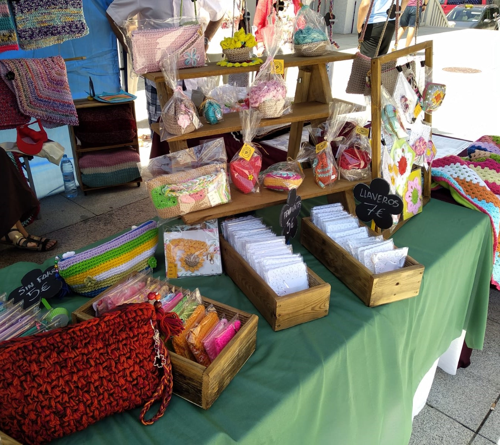

Mi nombre es Elipili y hago crochet desde siempre, con la particularidad que no me gusta mucho repetir mis modelos, a no ser que sean por encargo, claro está. Todas las piezas están hechas a mano... forros, cremalleras, botones, etc... Y por supuesto el crochet.